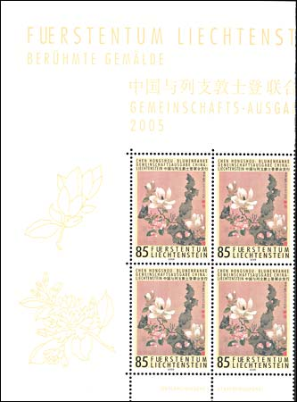
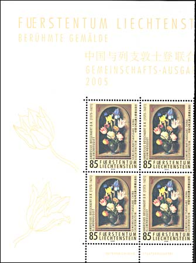
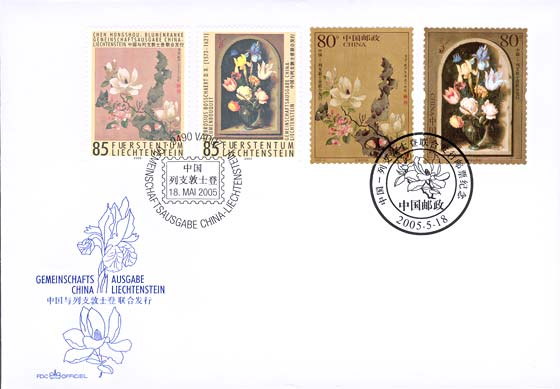
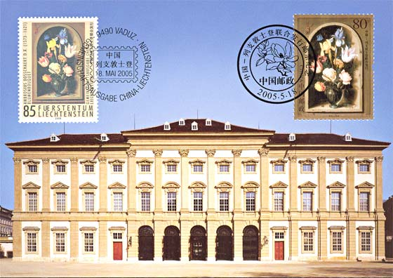
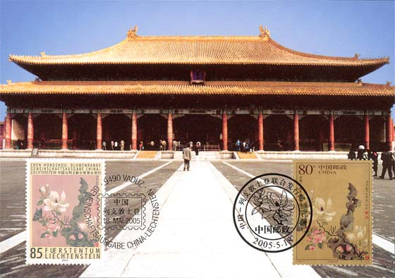

FLOWERS ON THE
2005
JOINT ISSUE LIECHTENSTEIN - CHINA
At first sight the contrast in size may feel like a physical shock: in geographical terms alone China and Liechtenstein could not be more different. On the one hand, the vast, spread-out country in the East of Europe, of some 1.3 billion people. On the other, an European state of just 35,000 inhabitants, small end compact.

And yet, among so many things that make them so different, there is one that unites them: love of art, or more exactly, the art of flower arranging. For this reason China and Liechtenstein have issued two joint stamps.

Important flower paintings from famous collections have been agreed on for stamp-face design. The Liechtenstein design shows what is surely one of the most celebrated floral bouquet by the Flemish painter Ambrosius Bosschaert the Elder (1753-1621) from the collection of the Prince of Liechtenstein.

Even as a young man, Bosschaert concentrated on still lives depicting floral bouquets or fruit -- a tradition taken up and continued by his three sons.

The Chinese design shows a flower tendril by a contemporary of Bosschaert, the Chinese artist Chen Hongshou (1588-1652), who lived during the Ming dynasty. The original is conserved at the Beijing Palace Museum.

Each design appears in both the Liechtenstein and the Chinese version of the stamp. Printed in photogravure, in five colors, by the Austrian State Printing House.
Source: Briefmarken aus dem Fürstentum Liechtenstein. 18. Mai / 6. Juni 2005.
|
Click the above image to visit the site |